Study the difference between ebpmf(log link), and NMF(topic model) model fitting
Dongyue Xie
2023-07-05
Last updated: 2023-07-06
Checks: 7 0
Knit directory: gsmash/
This reproducible R Markdown analysis was created with workflowr (version 1.6.2). The Checks tab describes the reproducibility checks that were applied when the results were created. The Past versions tab lists the development history.
Great! Since the R Markdown file has been committed to the Git repository, you know the exact version of the code that produced these results.
Great job! The global environment was empty. Objects defined in the global environment can affect the analysis in your R Markdown file in unknown ways. For reproduciblity it’s best to always run the code in an empty environment.
The command set.seed(20220606) was run prior to running
the code in the R Markdown file. Setting a seed ensures that any results
that rely on randomness, e.g. subsampling or permutations, are
reproducible.
Great job! Recording the operating system, R version, and package versions is critical for reproducibility.
Nice! There were no cached chunks for this analysis, so you can be confident that you successfully produced the results during this run.
Great job! Using relative paths to the files within your workflowr project makes it easier to run your code on other machines.
Great! You are using Git for version control. Tracking code development and connecting the code version to the results is critical for reproducibility.
The results in this page were generated with repository version 6b1d3d6. See the Past versions tab to see a history of the changes made to the R Markdown and HTML files.
Note that you need to be careful to ensure that all relevant files for
the analysis have been committed to Git prior to generating the results
(you can use wflow_publish or
wflow_git_commit). workflowr only checks the R Markdown
file, but you know if there are other scripts or data files that it
depends on. Below is the status of the Git repository when the results
were generated:
Ignored files:
Ignored: .Rhistory
Ignored: .Rproj.user/
Untracked files:
Untracked: analysis/pois_gp_split.Rmd
Untracked: chipexo_rep1_reverse.rds
Untracked: code/eb_spline.R
Untracked: code/my_gp.R
Untracked: code/plot_densities.R
Untracked: data/Citation.RData
Untracked: data/abstract.txt
Untracked: data/abstract.vocab.txt
Untracked: data/ap.txt
Untracked: data/ap.vocab.txt
Untracked: data/text.R
Untracked: data/tpm3.rds
Untracked: output/plots/
Untracked: output/tpm3_fit_fasttopics.rds
Untracked: output/tpm3_fit_stm.rds
Untracked: output/tpm3_fit_stm_slow.rds
Unstaged changes:
Modified: analysis/PMF_splitting.Rmd
Modified: analysis/poisson_smoothing_benchmark.Rmd
Note that any generated files, e.g. HTML, png, CSS, etc., are not included in this status report because it is ok for generated content to have uncommitted changes.
These are the previous versions of the repository in which changes were
made to the R Markdown (analysis/ebpmf_nmf_diff.Rmd) and
HTML (docs/ebpmf_nmf_diff.html) files. If you’ve configured
a remote Git repository (see ?wflow_git_remote), click on
the hyperlinks in the table below to view the files as they were in that
past version.
| File | Version | Author | Date | Message |
|---|---|---|---|---|
| Rmd | 6b1d3d6 | DongyueXie | 2023-07-06 | wflow_publish("analysis/ebpmf_nmf_diff.Rmd") |
Introduction
We explore the difference between EBPMF log link, and NMF or topic model, when fitting to an example where data are generated using log-link function.
We set \(N=p=300\). For the loadings, let \(l_0= 1_N, l_1 = (1_{N/2},0_{N/2}), l_2 = (0_{N/2},1_{N/2}), l_3=(0_{N/4},1_{N/2},0_{N/4})\). SO this gives 4 groups, and their loadings are \((1,0,0),(1,0,1),(0,1,1),(0,1,0)\). The factors \(f_1,f_2,f_3\) are drawn from \(0.5\delta_0 + 0.5\text{Exponential}(1)\), and the elements of intercept \(f_0\) are drawn iid from \(N(0,1)\).
SO L is \(N\times 4\) and F is \(p\times 4\). Then \(\Lambda = \exp(LF')\), and it is row-normalized such that its row-sums are 1: \(\Lambda 1_p = 1_N\). Then \(y_{ij}\sim \text{Pois}(s_i\Lambda_{ij})\) where \(s\) is the “document size”. Here we set \(s_i=5000\).
library(fastTopics)
library(ebpmf)
library(topicmodels)
library(NNLM)
library(ggplot2)
library(tidyverse)── Attaching packages ─────────────────────────────────────── tidyverse 1.3.1 ──✔ tibble 3.2.1 ✔ dplyr 1.1.0
✔ tidyr 1.3.0 ✔ stringr 1.5.0
✔ readr 1.4.0 ✔ forcats 0.5.1
✔ purrr 1.0.1 ── Conflicts ────────────────────────────────────────── tidyverse_conflicts() ──
✖ dplyr::filter() masks stats::filter()
✖ dplyr::lag() masks stats::lag()library(flashier)Loading required package: magrittr
Attaching package: 'magrittr'The following object is masked from 'package:purrr':
set_namesThe following object is masked from 'package:tidyr':
extractplot_factor_1by1_ggplot <- function(LL, title = NULL, points = FALSE) {
# Convert the matrix to a data frame
LL_df <- as.data.frame(LL)
# Add a row number column, which will serve as the x-axis
LL_df$rn <- 1:nrow(LL_df)
# Convert the data to a 'long' format
LL_long <- LL_df %>%
gather(key = "variable", value = "value", -rn)
# Generate the plots
p <- ggplot(LL_long, aes(x = rn, y = value))
# Add either points or lines based on the 'points' argument
if (points) {
p <- p + geom_point()
} else {
p <- p + geom_line(linewidth = 1)
}
p <- p +
facet_wrap(~ variable, scales = "free_y", ncol = 1, strip.position = "bottom") +
theme(strip.text = element_blank(),
axis.title.x=element_blank(),
axis.title.y=element_blank(),
strip.background = element_rect(fill = NA, color = NA, size = 0, linetype = 0), # Make the strip background transparent
panel.spacing = unit(2, "lines")) # Increase the spacing between panels
# Add title if provided
if (!is.null(title)) {
p <- p + ggtitle(title)
}
return(p)
}
n = 300
p = 300
K = 3
l_intensity = 1
#f_intensity = 2
l0 = rep(1,n)
l1 = c(rep(l_intensity,n/2),rep(0,n/2))
l2 = c(rep(0,n/2),rep(l_intensity,n/2))
l3 = c(rep(0,n/4),rep(l_intensity,n/4*2),rep(0,n/4))
Ltrue = cbind(l0,l1,l2,l3)
image(t(Ltrue),main='TRUE Loadings')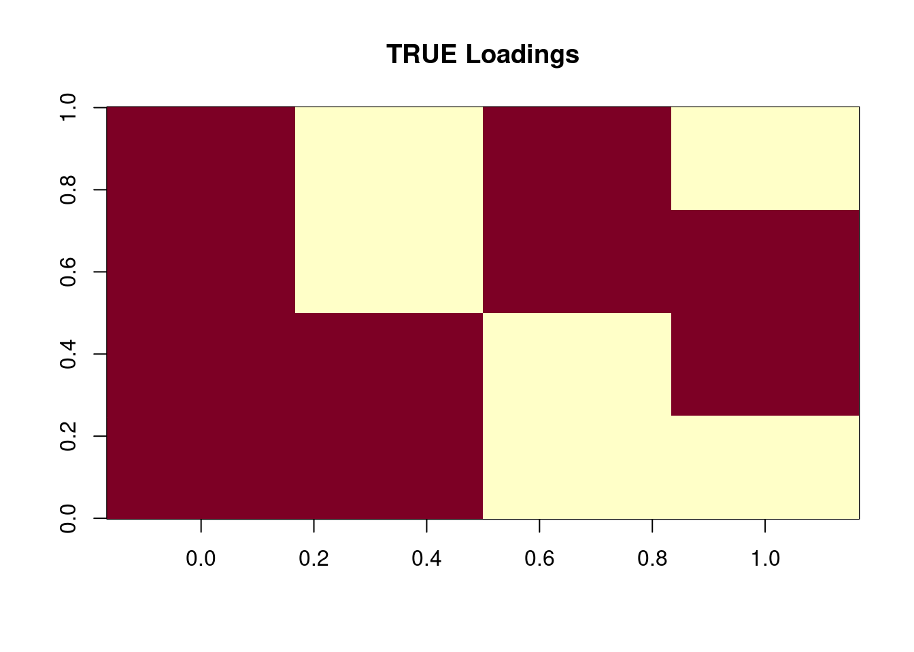
plot_factor_1by1_ggplot(Ltrue,title='TRUE Loadings')Warning: The `size` argument of `element_rect()` is deprecated as of ggplot2
3.4.0.
Warning: Please use the `linewidth` argument instead.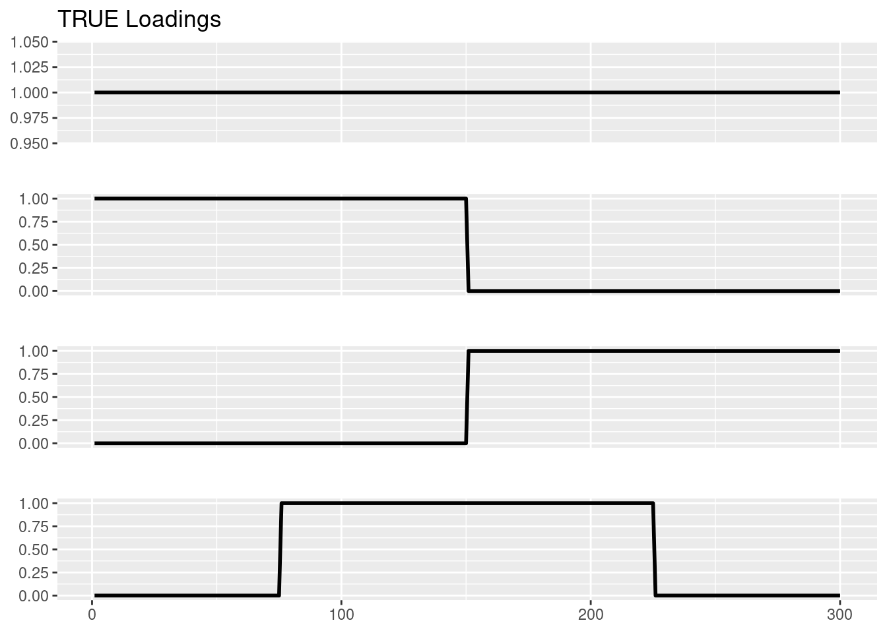
set.seed(12345)
# draw F from point-exponential?
draw_point_exp = function(n,pi0,l){
res = rexp(n,l)
res[rbinom(n,1,pi0)==0] = 0
res
}
f1 = draw_point_exp(p,0.5,1)
f2 = draw_point_exp(p,0.5,1)
f3 = draw_point_exp(p,0.5,1)
Ftrue = cbind(f1,f2,f3)
# make sure no row is all 0's
for(i in which(rowSums(Ftrue)==0)){
Ftrue[i,sample(K,1)] = rexp(1)
}
# draw intercept
f0 = rnorm(p)
Ftrue = cbind(f0,Ftrue)
image(t(Ftrue),main='F')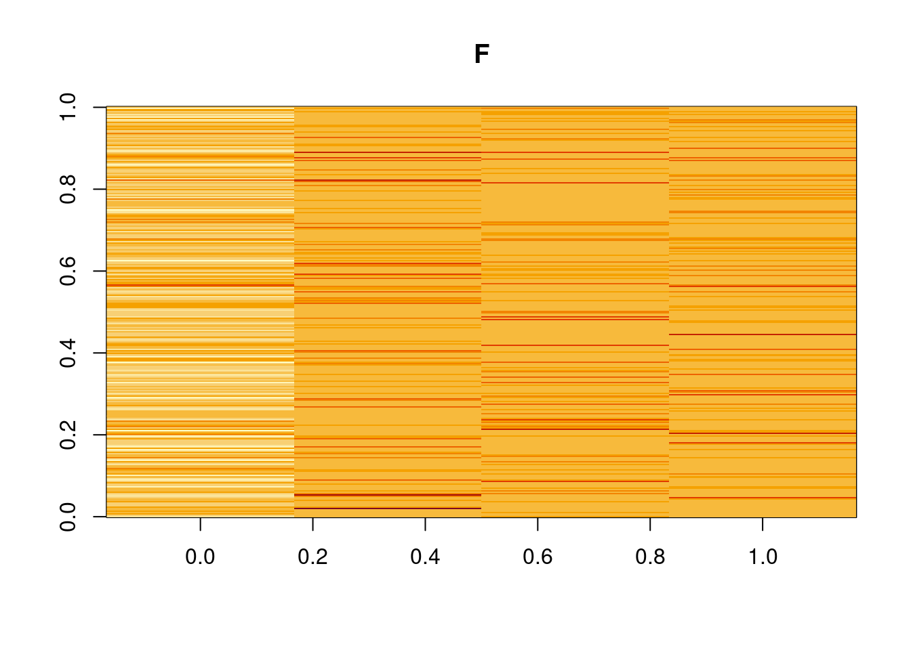
plot_factor_1by1_ggplot(Ftrue,title='TRUE Factors',points = T)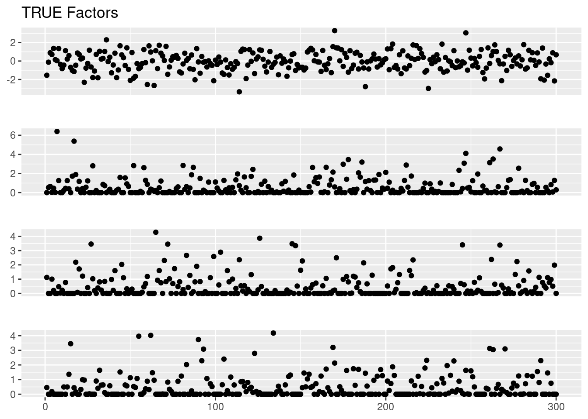
cov2cor(crossprod(Ftrue)) f0 f1 f2 f3
f0 1.00000000 -0.03566202 -0.01184522 -0.03276669
f1 -0.03566202 1.00000000 0.23692146 0.29511880
f2 -0.01184522 0.23692146 1.00000000 0.16472268
f3 -0.03276669 0.29511880 0.16472268 1.00000000#Ftrue = matrix(rnorm(p*(K+1)), ncol=K+1)
# f0 = rep(f_intensity,p)
# f1 = c(rep(f_intensity,p/3),rep(0,p/3*2))
# f2 = c(rep(0,p/3),rep(f_intensity,p/3),rep(0,p/3))
# f3 = c(rep(0,p/3*2),rep(f_intensity,p/3))
# Ftrue = cbind(f0,f1,f2,f3)Draw Y:
set.seed(12345)
Lambda = exp(tcrossprod(Ltrue,Ftrue))
Lambda = Lambda/rowSums(Lambda)
s = 5000
Y = matrix(rpois(n*p,s*Lambda),nrow=n,ncol=p)Fit models:
fit_tm = fit_topic_model(Y,k=4)Initializing factors using Topic SCORE algorithm.
Initializing loadings by running 10 SCD updates.
Fitting rank-4 Poisson NMF to 300 x 300 dense matrix.
Running 100 EM updates, without extrapolation (fastTopics 0.6-142).
Refining model fit.
Fitting rank-4 Poisson NMF to 300 x 300 dense matrix.
Running 100 SCD updates, with extrapolation (fastTopics 0.6-142).plot_factor_1by1_ggplot(fit_tm$L,points=TRUE,title='Topic model(fastTopics), Loadings')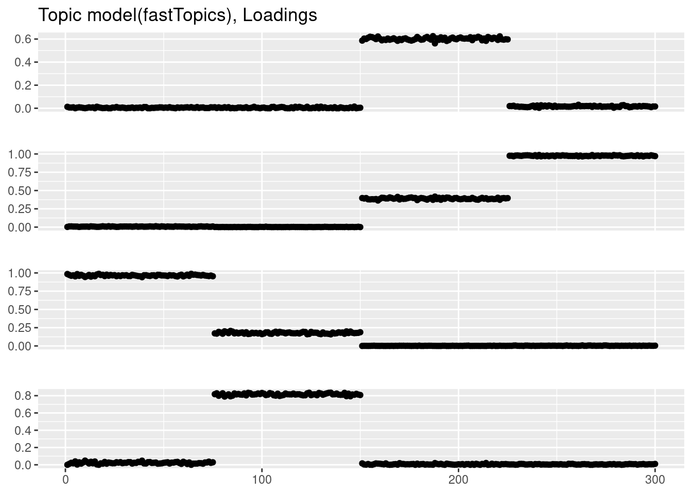
plot_factor_1by1_ggplot(fit_tm$F,points=TRUE,title='Topic model(fastTopics), Factors')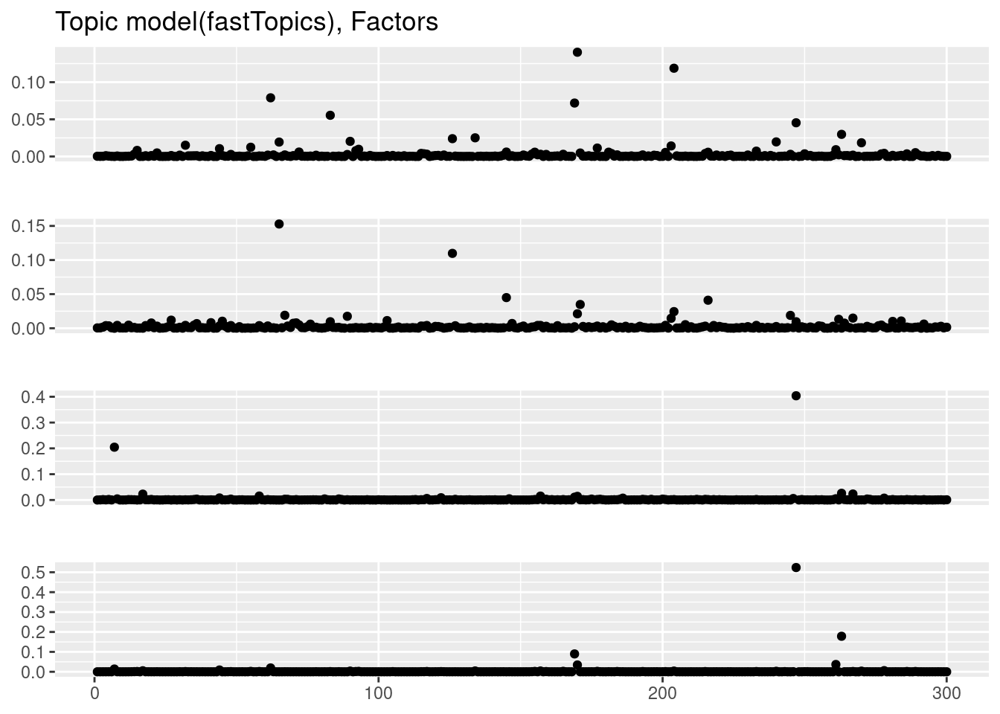
#
#
# fit_nmf = NNLM::nnmf(Y,k=4,loss = 'mkl',method = 'lee')
# plot_factor_1by1_ggplot(fit_nmf$W,points=TRUE,title='NMF (nnmf), Loadings')
# plot_factor_1by1_ggplot(t(fit_nmf$W),points=TRUE,title='NMF (nnmf), Factors')
fit_ebpmf = ebpmf_log(Y,flash_control=list(Kmax=10,
ebnm.fn=c(ebnm::ebnm_point_exponential,ebnm::ebnm_point_exponential),
loadings_sign=1,
factors_sign = 1),
var_type = 'constant',
sigma2_control = list(return_sigma2_trace=T),
general_control = list(maxiter=100,conv_tol=1e-5))Initializing M...Solving VGA constant...For large matrix this may require large memory usage
running initial flash fitWarning in scale.EF(EF): Fitting stopped after the initialization function
failed to find a non-zero factor.Running iterations...
iter 10, avg elbo=-2.17769, K=5
iter 20, avg elbo=-2.10072, K=5
iter 30, avg elbo=-2.07259, K=5
iter 40, avg elbo=-2.05847, K=5
iter 50, avg elbo=-2.05, K=5
iter 60, avg elbo=-2.04445, K=5
iter 70, avg elbo=-2.04051, K=5
iter 80, avg elbo=-2.03753, K=5
iter 90, avg elbo=-2.03516, K=5
iter 100, avg elbo=-2.03321, K=5plot(fit_ebpmf$sigma2_trace,type='l',xlab='iterations',ylab='sigma2')
abline(h=0,lty=2)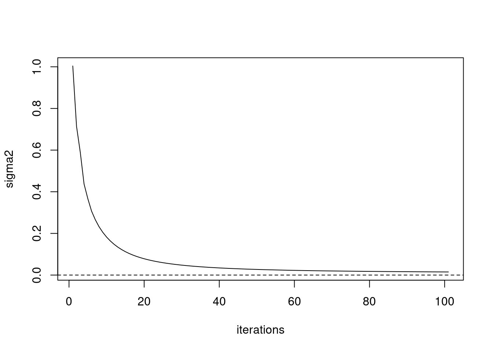
plot_factor_1by1_ggplot(fit_ebpmf$fit_flash$L.pm,points = T,title='EBPMF, Loadings')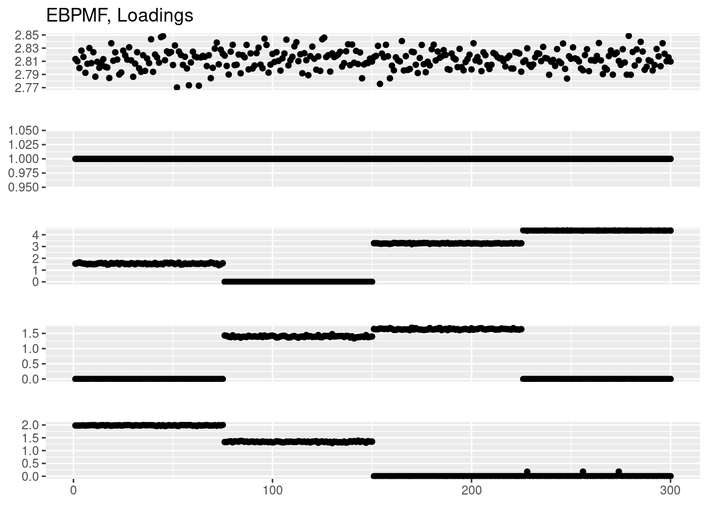
plot_factor_1by1_ggplot(fit_ebpmf$fit_flash$F.pm,points = T,title='EBPMF, Factors')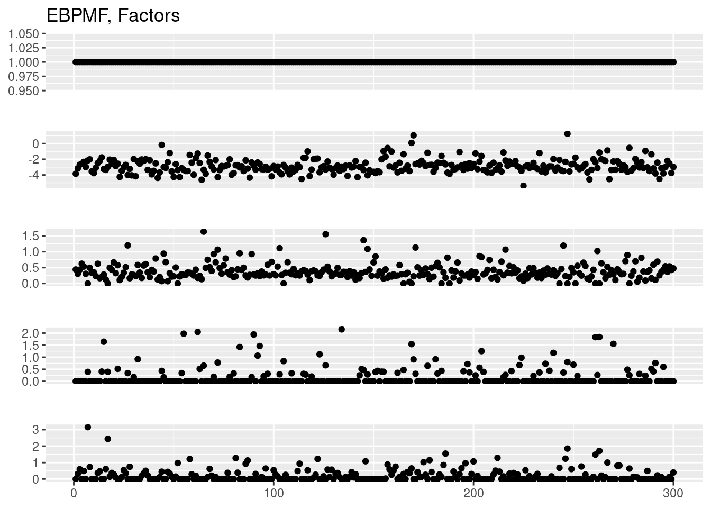
# fit EBNMF + log transformation?
Y_tilde = log(1+median(rowSums(Y))/0.5*Y/rowSums(Y))
# fit_ebnmf = flash(Y_tilde,ebnm.fn=c(ebnm::ebnm_point_exponential,ebnm::ebnm_point_exponential),greedy.Kmax = 10,var.type = 2,backfit = TRUE)
# plot_factor_1by1_ggplot(fit_ebnmf$L.pm,points = T,title='EBNMF(col-specific var), Loadings')
# plot_factor_1by1_ggplot(fit_ebnmf$F.pm,points = T,title='EBNMF(col-specific var), Factors')
fit_ebnmf = flash(Y_tilde,ebnm.fn=c(ebnm::ebnm_point_exponential,ebnm::ebnm_point_exponential),greedy.Kmax = 10,backfit = TRUE,var.type = 2)Adding factor 1 to flash object...
Adding factor 2 to flash object...
Adding factor 3 to flash object...
Adding factor 4 to flash object...Warning in scale.EF(EF): Fitting stopped after the initialization function
failed to find a non-zero factor.Factor doesn't significantly increase objective and won't be added.
Wrapping up...
Done.
Backfitting 3 factors (tolerance: 1.34e-03)...
Difference between iterations is within 1.0e+03...
Difference between iterations is within 1.0e+02...
Difference between iterations is within 1.0e+01...
Difference between iterations is within 1.0e+00...
Difference between iterations is within 1.0e-01...
Difference between iterations is within 1.0e-02...
Difference between iterations is within 1.0e-03...
Wrapping up...
Done.
Nullchecking 3 factors...
Done.plot_factor_1by1_ggplot(fit_ebnmf$L.pm,points = T,title='EBNMF, Loadings')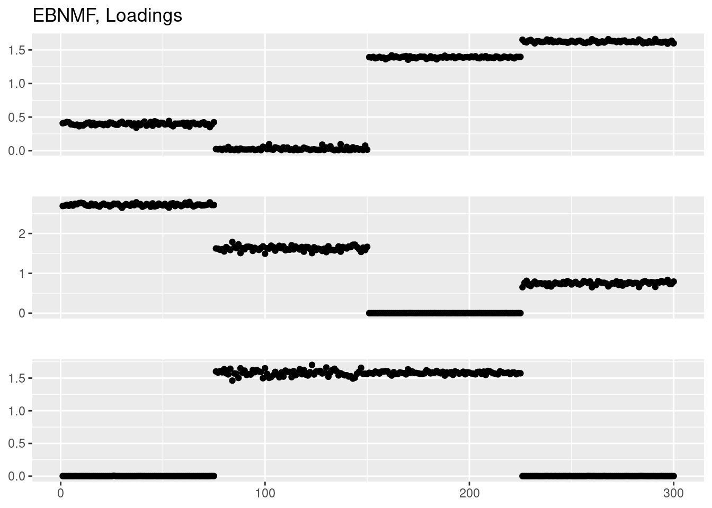
plot_factor_1by1_ggplot(fit_ebnmf$F.pm,points = T,title='EBNMF, Factors')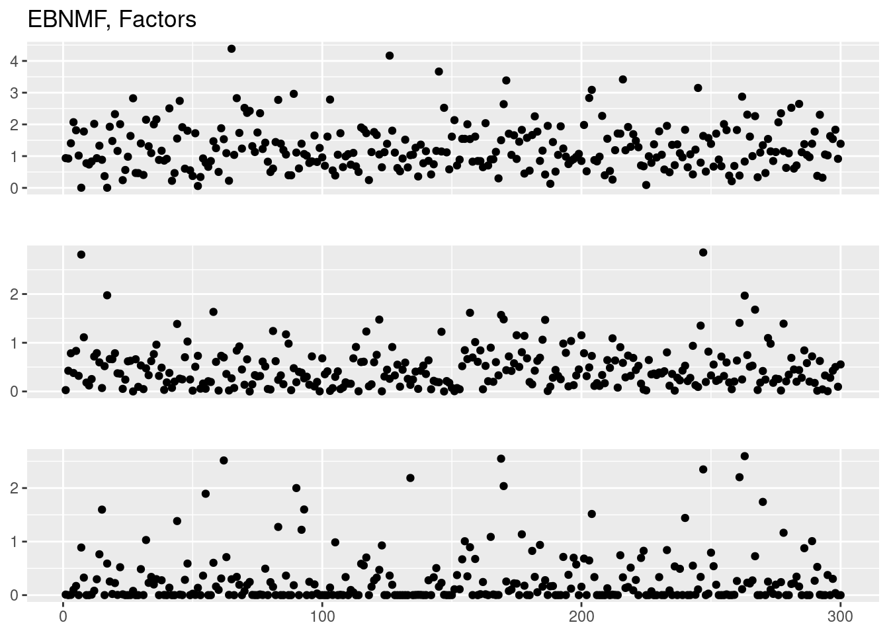
# # fit GLMPCA
# library(glmpca)
# fit_glmpca = glmpca(Y,L=4,fam='poi')
# plot(fit_glmpca$loadings[,1])
# plot(fit_glmpca$loadings[,2])
# plot(fit_glmpca$loadings[,3])
# plot(fit_glmpca$loadings[,4])
#
# # fit Poisson PCA
# library(PoissonPCA)
# fit_ppca = Poisson_Corrected_PCA(Y,k=4)
# plot(fit_ppca$scores[,1])
# plot(fit_ppca$scores[,2])
# plot(fit_ppca$scores[,3])
# plot(fit_ppca$scores[,4])Factors more visualizable?
Here we set factors to be more visualizable so that we can tell what the model actually fits.
We set \(f_1 = (1_{N/3},0_{N/3\times2}),f_2 = (0_{N/3},1_{N/3},0_{N/3}),f_1 = (0_{N/3\times 2},1_{N/3})\). Again the intercept \(f_0\) is drawn from N(0,1).
f_intensity = 2
f1 = c(rep(f_intensity,p/3),rep(0,p/3*2))
f2 = c(rep(0,p/3),rep(f_intensity,p/3),rep(0,p/3))
f3 = c(rep(0,p/3*2),rep(f_intensity,p/3))
Ftrue = cbind(f0,f1,f2,f3)
image(t(Ftrue),main='F')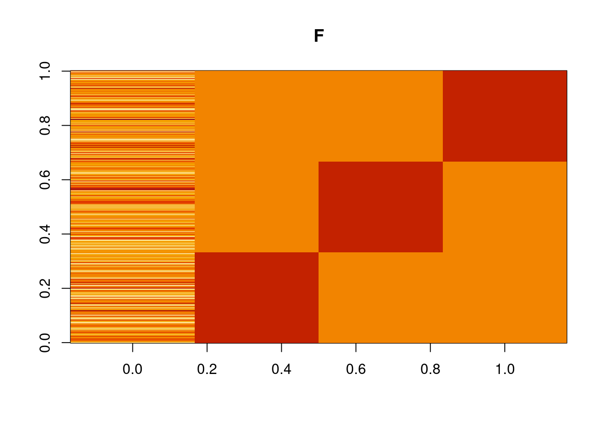
plot_factor_1by1_ggplot(Ftrue,title='TRUE Factors',points = T)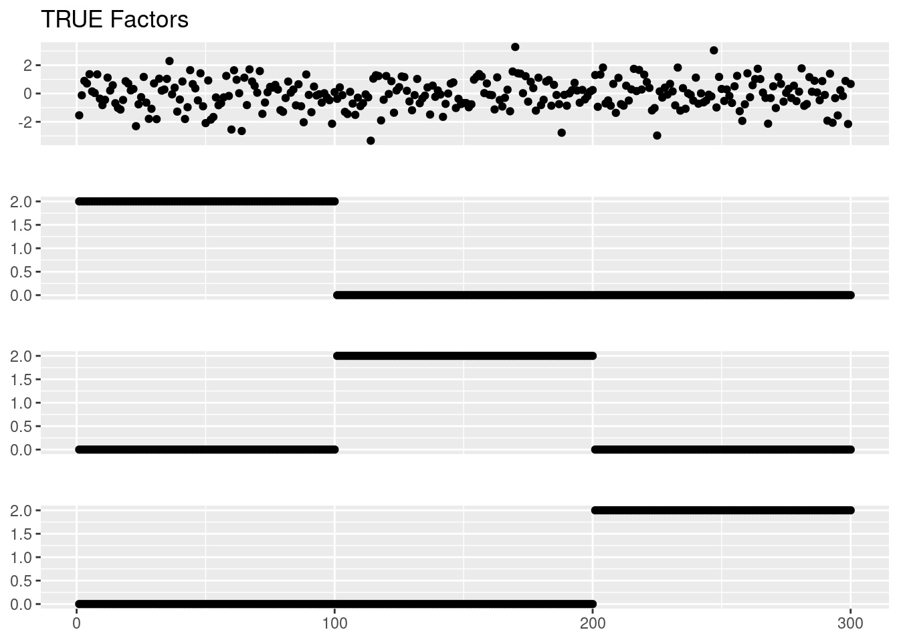
cov2cor(crossprod(Ftrue)) f0 f1 f2 f3
f0 1.00000000 -0.06650863 -0.03186764 0.01186282
f1 -0.06650863 1.00000000 0.00000000 0.00000000
f2 -0.03186764 0.00000000 1.00000000 0.00000000
f3 0.01186282 0.00000000 0.00000000 1.00000000Draw Y:
set.seed(12345)
Lambda = exp(tcrossprod(Ltrue,Ftrue))
Lambda = Lambda/rowSums(Lambda)
s = 5000
Y = matrix(rpois(n*p,s*Lambda),nrow=n,ncol=p)Fit models:
fit_tm = fit_topic_model(Y,k=4)Initializing factors using Topic SCORE algorithm.
Initializing loadings by running 10 SCD updates.
Fitting rank-4 Poisson NMF to 300 x 300 dense matrix.
Running 100 EM updates, without extrapolation (fastTopics 0.6-142).
Refining model fit.
Fitting rank-4 Poisson NMF to 300 x 300 dense matrix.
Running 100 SCD updates, with extrapolation (fastTopics 0.6-142).plot_factor_1by1_ggplot(fit_tm$L,points=TRUE,title='Topic model(fastTopics), Loadings')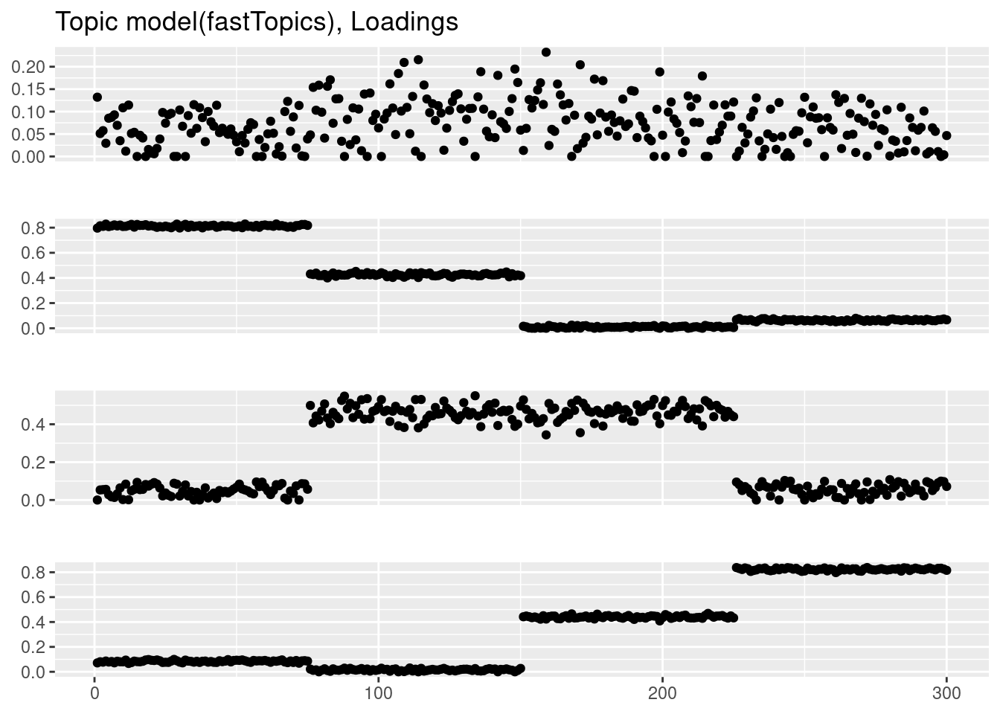
plot_factor_1by1_ggplot(fit_tm$F,points=TRUE,title='Topic model(fastTopics), Factors')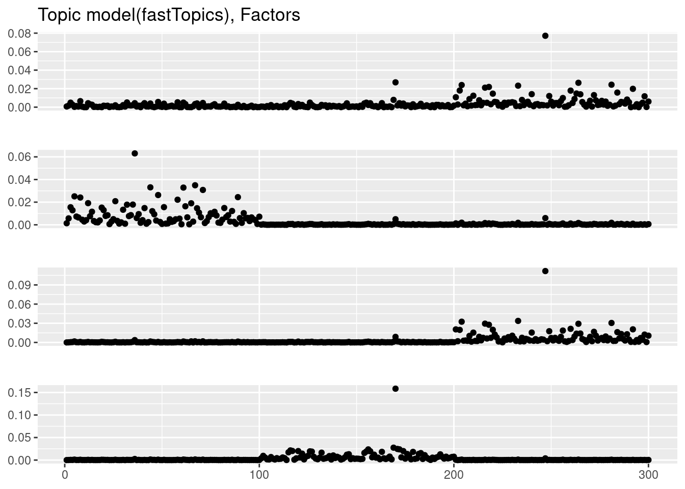
fit_lda = LDA(Y,k=4)
plot_factor_1by1_ggplot(fit_lda@gamma,points=TRUE,title='LDA, Loadings')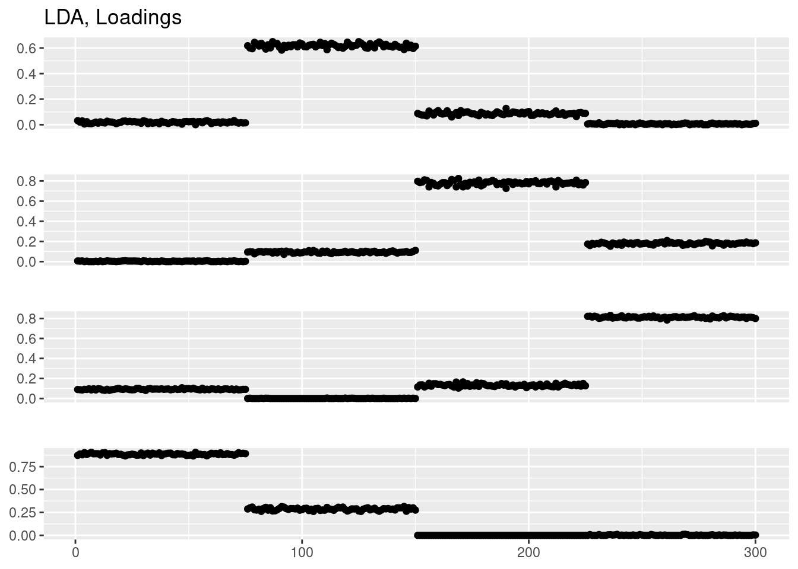
#
#
# fit_nmf = NNLM::nnmf(Y,k=4,loss = 'mkl',method = 'lee')
# plot_factor_1by1_ggplot(fit_nmf$W,points=TRUE,title='NMF (nnmf), Loadings')
# plot_factor_1by1_ggplot(t(fit_nmf$W),points=TRUE,title='NMF (nnmf), Factors')
fit_ebpmf = ebpmf_log(Y,flash_control=list(Kmax=10,
ebnm.fn=c(ebnm::ebnm_point_exponential,ebnm::ebnm_point_exponential),
loadings_sign=1,
factors_sign = 1),
var_type = 'constant',
sigma2_control = list(return_sigma2_trace=T),
general_control = list(maxiter=70,conv_tol=1e-5))Initializing M...Solving VGA constant...For large matrix this may require large memory usage
running initial flash fitWarning in scale.EF(EF): Fitting stopped after the initialization function
failed to find a non-zero factor.No new structure found yet. Re-trying... 1Warning in scale.EF(EF): Fitting stopped after the initialization function
failed to find a non-zero factor.Running iterations...Warning in scale.EF(EF): Fitting stopped after the initialization function
failed to find a non-zero factor.
Warning in scale.EF(EF): Fitting stopped after the initialization function
failed to find a non-zero factor.
Warning in scale.EF(EF): Fitting stopped after the initialization function
failed to find a non-zero factor.iter 10, avg elbo=-2.52561, K=5
iter 20, avg elbo=-2.47286, K=5
iter 30, avg elbo=-2.458, K=5
iter 40, avg elbo=-2.45151, K=5
iter 50, avg elbo=-2.44791, K=5
iter 60, avg elbo=-2.44559, K=5
iter 70, avg elbo=-2.44394, K=5plot(fit_ebpmf$sigma2_trace,type='l',xlab='iterations',ylab='sigma2')
abline(h=0,lty=2)
plot_factor_1by1_ggplot(fit_ebpmf$fit_flash$L.pm,points = T,title='EBPMF, Loadings')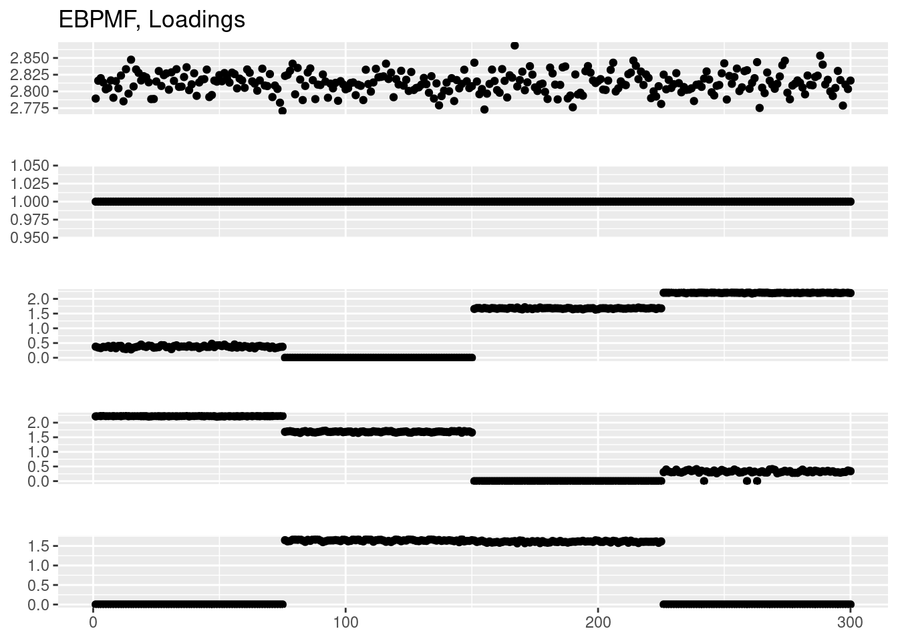
plot_factor_1by1_ggplot(fit_ebpmf$fit_flash$F.pm,points = T,title='EBPMF, Factors')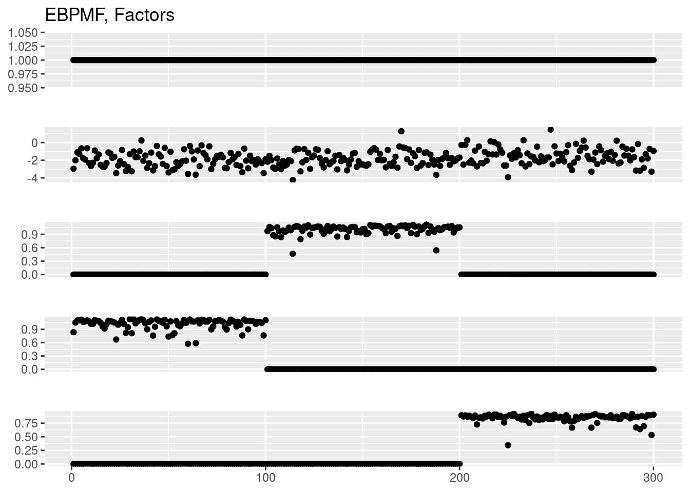
# fit EBNMF + log transformation?
Y_tilde = log(1+median(rowSums(Y))/0.5*Y/rowSums(Y))
fit_ebnmf = flash(Y_tilde,ebnm.fn=c(ebnm::ebnm_point_exponential,ebnm::ebnm_point_exponential),greedy.Kmax = 10,backfit = TRUE,var.type = 2)Adding factor 1 to flash object...
Adding factor 2 to flash object...
Adding factor 3 to flash object...
Adding factor 4 to flash object...Warning in scale.EF(EF): Fitting stopped after the initialization function
failed to find a non-zero factor.Factor doesn't significantly increase objective and won't be added.
Wrapping up...
Done.
Backfitting 3 factors (tolerance: 1.34e-03)...
Difference between iterations is within 1.0e+04...
Difference between iterations is within 1.0e+03...
Difference between iterations is within 1.0e+02...
Difference between iterations is within 1.0e+01...
Difference between iterations is within 1.0e+00...
Difference between iterations is within 1.0e-01...
Difference between iterations is within 1.0e-02...
Difference between iterations is within 1.0e-03...
Wrapping up...
Done.
Nullchecking 3 factors...
Done.plot_factor_1by1_ggplot(fit_ebnmf$L.pm,points = T,title='EBNMF, Loadings')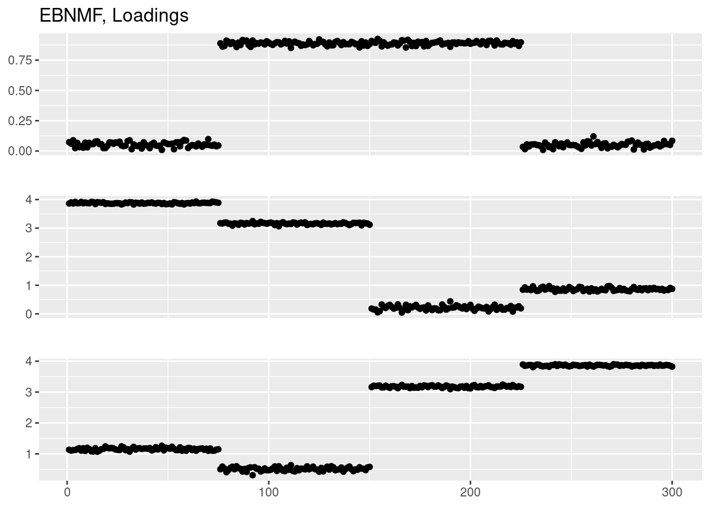
plot_factor_1by1_ggplot(fit_ebnmf$F.pm,points = T,title='EBNMF, Factors')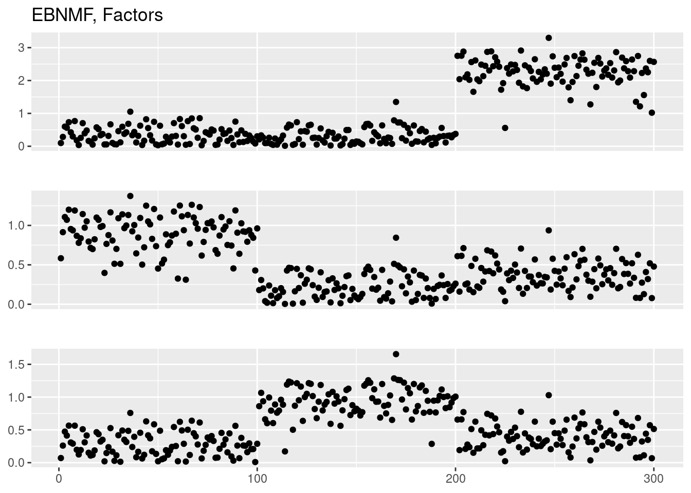
# # fit GLMPCA
# library(glmpca)
# fit_glmpca = glmpca(Y,L=4,fam='poi')
# plot(fit_glmpca$loadings[,1])
# plot(fit_glmpca$loadings[,2])
# plot(fit_glmpca$loadings[,3])
# plot(fit_glmpca$loadings[,4])
#
# # fit Poisson PCA
# library(PoissonPCA)
# fit_ppca = Poisson_Corrected_PCA(Y,k=4)
# plot(fit_ppca$scores[,1])
# plot(fit_ppca$scores[,2])
# plot(fit_ppca$scores[,3])
# plot(fit_ppca$scores[,4])
sessionInfo()R version 4.1.0 (2021-05-18)
Platform: x86_64-pc-linux-gnu (64-bit)
Running under: CentOS Linux 7 (Core)
Matrix products: default
BLAS: /software/R-4.1.0-no-openblas-el7-x86_64/lib64/R/lib/libRblas.so
LAPACK: /software/R-4.1.0-no-openblas-el7-x86_64/lib64/R/lib/libRlapack.so
locale:
[1] LC_CTYPE=en_US.UTF-8 LC_NUMERIC=C LC_TIME=C
[4] LC_COLLATE=C LC_MONETARY=C LC_MESSAGES=C
[7] LC_PAPER=C LC_NAME=C LC_ADDRESS=C
[10] LC_TELEPHONE=C LC_MEASUREMENT=C LC_IDENTIFICATION=C
attached base packages:
[1] stats graphics grDevices utils datasets methods base
other attached packages:
[1] flashier_0.2.36 magrittr_2.0.3 forcats_0.5.1 stringr_1.5.0
[5] dplyr_1.1.0 purrr_1.0.1 readr_1.4.0 tidyr_1.3.0
[9] tibble_3.2.1 tidyverse_1.3.1 ggplot2_3.4.1 NNLM_0.4.4
[13] topicmodels_0.2-14 ebpmf_2.1.9 fastTopics_0.6-142 workflowr_1.6.2
loaded via a namespace (and not attached):
[1] Rtsne_0.16 ebpm_0.0.1.3 colorspace_2.1-0
[4] smashr_1.3-6 ellipsis_0.3.2 modeltools_0.2-23
[7] mr.ash_0.1-87 rprojroot_2.0.2 fs_1.5.0
[10] rstudioapi_0.13 farver_2.1.1 MatrixModels_0.5-1
[13] ggrepel_0.9.3 lubridate_1.7.10 fansi_1.0.4
[16] mvtnorm_1.1-2 xml2_1.3.2 codetools_0.2-18
[19] splines_4.1.0 cachem_1.0.5 knitr_1.33
[22] jsonlite_1.8.4 nloptr_1.2.2.2 mcmc_0.9-7
[25] broom_0.7.8 dbplyr_2.1.1 ashr_2.2-54
[28] smashrgen_1.2.4 uwot_0.1.14 compiler_4.1.0
[31] httr_1.4.5 backports_1.2.1 assertthat_0.2.1
[34] RcppZiggurat_0.1.6 Matrix_1.5-3 fastmap_1.1.0
[37] lazyeval_0.2.2 cli_3.6.1 later_1.3.0
[40] htmltools_0.5.4 quantreg_5.94 prettyunits_1.1.1
[43] tools_4.1.0 NLP_0.2-1 coda_0.19-4
[46] gtable_0.3.1 glue_1.6.2 Rcpp_1.0.10
[49] softImpute_1.4-1 slam_0.1-48 cellranger_1.1.0
[52] jquerylib_0.1.4 vctrs_0.6.2 iterators_1.0.13
[55] wavethresh_4.7.2 xfun_0.24 rvest_1.0.0
[58] trust_0.1-8 lifecycle_1.0.3 irlba_2.3.5.1
[61] MASS_7.3-54 scales_1.2.1 hms_1.1.2
[64] promises_1.2.0.1 parallel_4.1.0 SparseM_1.81
[67] yaml_2.3.7 pbapply_1.7-0 sass_0.4.0
[70] stringi_1.6.2 SQUAREM_2021.1 highr_0.9
[73] deconvolveR_1.2-1 foreach_1.5.1 caTools_1.18.2
[76] truncnorm_1.0-8 shape_1.4.6 horseshoe_0.2.0
[79] rlang_1.1.1 pkgconfig_2.0.3 matrixStats_0.59.0
[82] bitops_1.0-7 ebnm_1.0-11 evaluate_0.14
[85] lattice_0.20-44 invgamma_1.1 labeling_0.4.2
[88] htmlwidgets_1.6.1 Rfast_2.0.7 cowplot_1.1.1
[91] tidyselect_1.2.0 R6_2.5.1 generics_0.1.3
[94] DBI_1.1.1 haven_2.4.1 withr_2.5.0
[97] pillar_1.8.1 whisker_0.4 survival_3.2-11
[100] mixsqp_0.3-48 modelr_0.1.8 crayon_1.5.2
[103] utf8_1.2.3 plotly_4.10.1 rmarkdown_2.9
[106] progress_1.2.2 readxl_1.3.1 grid_4.1.0
[109] data.table_1.14.8 git2r_0.28.0 reprex_2.0.0
[112] digest_0.6.31 vebpm_0.4.8 tm_0.7-8
[115] httpuv_1.6.1 MCMCpack_1.6-3 RcppParallel_5.1.7
[118] stats4_4.1.0 munsell_0.5.0 glmnet_4.1-2
[121] viridisLite_0.4.1 bslib_0.4.2 quadprog_1.5-8